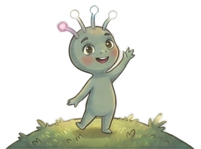
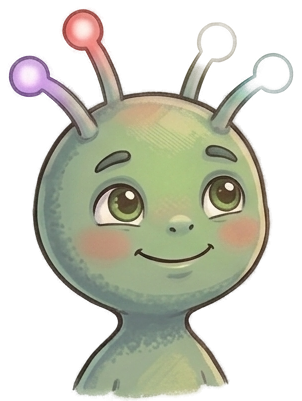

Yubuu kennenlernen
Hilfst du mir, Gefühle zu verstehen?
Ich reise durch die Galaxie und besuche Planeten, auf denen Wesen alle möglichen Gefühle haben, die ich noch nicht verstehe. Ich bin keine Lehrkraft, nur neugierig. Spiel eine Runde mit mir und zeig mir, wie sich ein Gefühl anfühlt.
In der Kita begleitet eine pädagogische Fachkraft diese Runde mit zwei bis vier Kindern gleichzeitig: Sie drehen, ziehen Karten und legen der Reihe nach. Das Rad bringt den Kindern kein „richtiges“ Gefühl bei. Es gibt ihnen Worte für das, was sie ohnehin in sich tragen, und einen ruhigen Ort, es laut auszusprechen.
